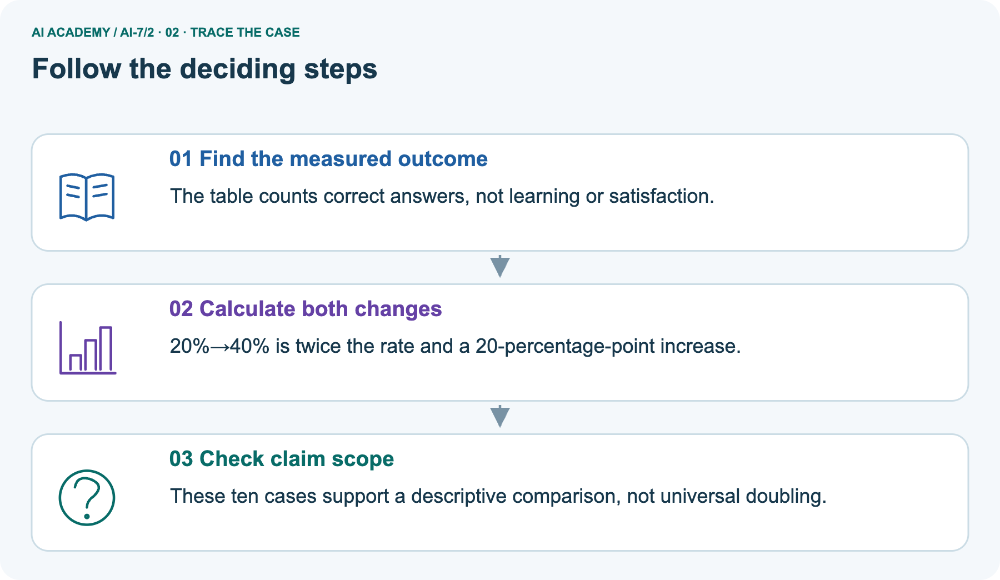
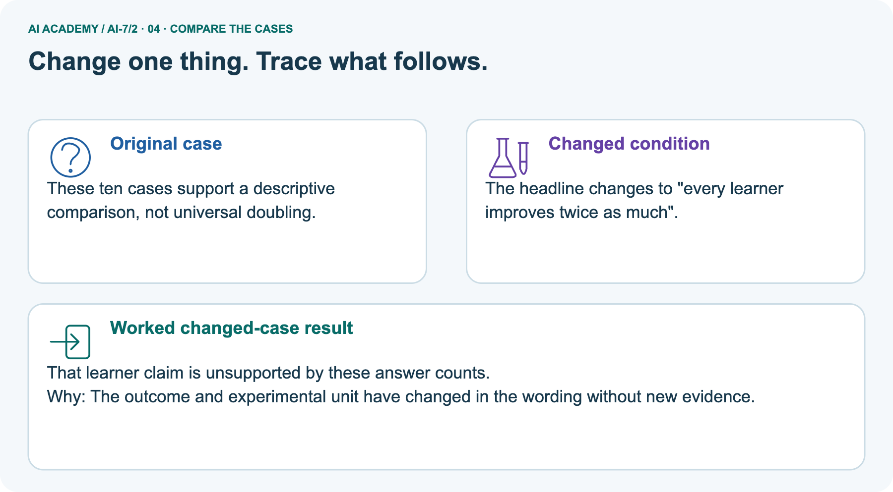
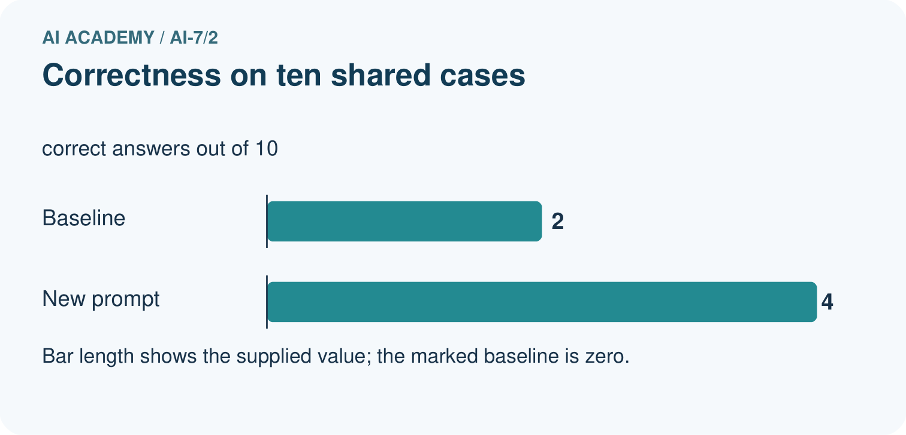
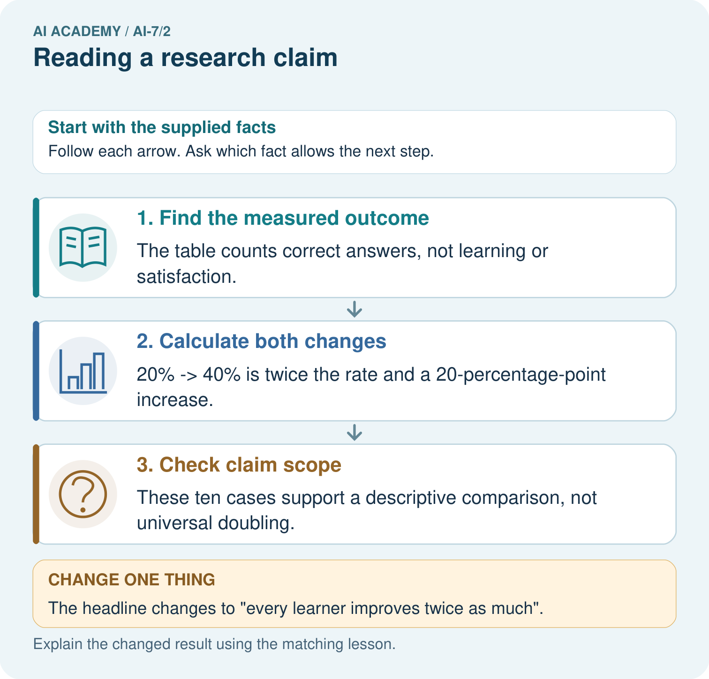
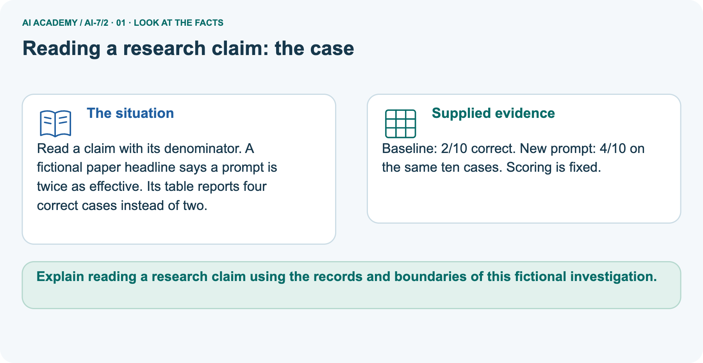
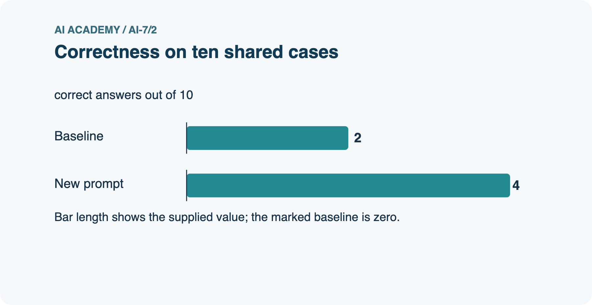
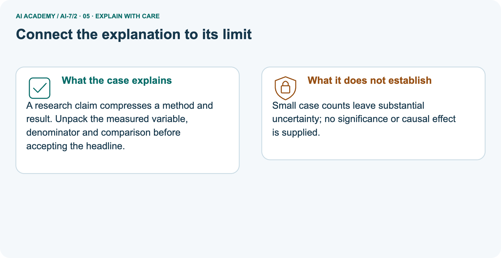
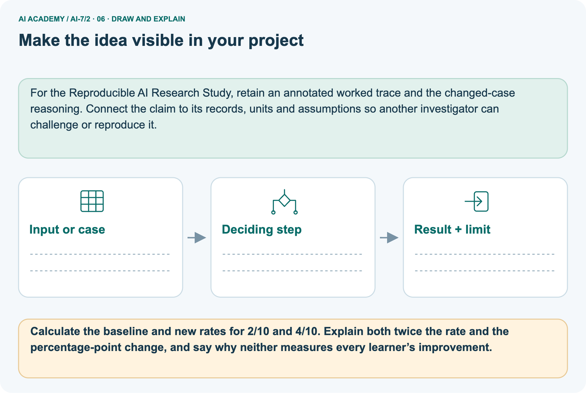

AI Academy · Level 7 · Grade 12 · Week 2 · Student lesson
Reading a research claim
Learn to understand, design, build, test and explain AI systems responsibly.
Project: Reproducible AI Research Study
THE CONNECTED WEEK
Unpack the outcome. Keep the denominator. Audit the headline.
Read descriptive research claims without confusing absolute/relative change or adding unmeasured learner effects.
Keep one habit: Claim contract → eight-case arithmetic → ten-case doubling picture → unit/scope probes → exact-count audit → independent local-median claim.
Main lesson · Section 1
Read the claim through its outcome, denominator and conditions
A headline can extend beyond the comparison its table actually supports.
Learning goals
I can explain the mechanism and terminology of reading a research claim.
I can apply the stated procedure to a new case with a traceable result.
I can identify an assumption or limitation and design a revealing follow-up.
Retrieve bounded questions and fixed scoring
Close your notes first. A rough first answer helps us choose the right starting point; it is not a score for your ability.
Without opening the old lesson, explain one key idea from A question that evidence can answer. Give an example and a mistake that the idea helps you avoid.
After trying, check the relevant lesson or ask your teacher. Change the part of your explanation that the evidence shows was wrong.
Prerequisite and starting response
Recall A question that evidence can answer. Explain why a recorded result needs its input conditions and evidence source before it can support a claim.
End goal
Explain reading a research claim using the records and boundaries of this fictional investigation.
Earlier wording, alternatives and picture transcripts
Your learning target
Remember before reading
This week you will practise:
Explain the mechanism and terminology of reading a research claim
Apply the stated procedure to a new case with a traceable result
Identify an assumption or limitation and design a revealing follow-up
Retrieve what you already know
This week’s end goal
Main lesson · Section 2
Separate the headline, measured variable and evidence gaps
A descriptive improvement is narrower than a universal benefit.
Begin with “better at what?”
A headline says “B is better.” Better at which measured outcome, compared with what, and on how many cases? Read the method and result together. In the main fictional report, supported-answer counts rise from 5/8 to 6/8 on the same eight constructed cases. That is a higher observed rate for this outcome. It is not a result about every task, each learner or an unmeasured cause.
Ask for the scoring and conditions that make the count interpretable.
Define reading a research claim
Reading a claim requires its method, data, comparison and uncertainty. Titles and abstracts may omit conditions crucial to interpretation.
Complete denominator and measurement contract
| Claim-audit item | Complete supplied fictional evidence |
|---|---|
| Main dataset/unit | Eight fixed constructed answer cases; case is the reported unit |
| Main baseline A | 5 supported answers / 8 cases |
| Main method B | 6 supported answers / same 8 cases |
| Main outcome | Supplied supported-answer flag; do not relabel it learner improvement or overall usefulness |
| Main descriptive change | 62.5% to 75%; +12.5 percentage points; ratio 1.2 |
| Missing method details | Exact support rubric, versions, evaluation conditions and sampling/uncertainty analysis not supplied by the headline |
| Separate picture | Correct-answer count 2/10 to 4/10 on same ten cases with fixed scoring |
| Picture descriptive change | 20% to 40%; +20 percentage points; rate ratio 2, relative increase 100% |
| Limits | No population interval, significance result, causal effect or individual-learning evidence supplied |
| Evidence status | All counts and any added possible paired records are fictional examples, not a real paper or new experiment |
Name supplied and missing evidence
Earlier wording, alternatives and picture transcripts
Begin by writing the question the procedure is intended to answer. Identify the information already supplied, the information it will produce and the information still missing.
These are constructed classroom examples; they do not require live accounts, private records or an external service. Do not treat a plausible explanation as a measured outcome.
Main lesson · Section 3
Trace counts, rates and the exact scope of “better”
Keep percentage points separate from relative percent change.
Original claim-versus-evidence reading procedure
Separate the claim from supplied evidence. Record dataset, unit, baseline, metric and limitations. Ask whether the statement extends beyond those observations.
Complete main arithmetic and inference ledger
| Main fictional comparison | Baseline A | Method B | Supported descriptive statement |
|---|---|---|---|
| Supported count / same cases | 5 / 8 | 6 / 8 | One more supported answer in these counts |
| Observed percentage | 62.5% | 75% | +12.5 percentage points |
| Rate ratio | Reference | (6/8) / (5/8) = 1.2 | 20% relative increase in this measured rate |
| Case-level transitions | Not supplied | Not supplied | Totals do not show who gained or regressed |
| Broader inference | No sampling/uncertainty analysis | No general task or learner outcomes | Do not claim universal superiority or causal effect |
State the missing method and uncertainty evidence
Before applying the procedure, write its units, denominator or decision boundary where relevant. A partner should be able to repeat each step using the same inputs.
If a required input is absent or violates the stated contract, record that condition explicitly instead of quietly replacing it with a convenient value.
Explain the visual
Point to the input, the deciding step and the result in this week’s visual. Explain the same step in ordinary words. A picture helps when you can say what each part represents.
Earlier wording, alternatives and picture transcripts
Reading a research claim — evidence trace
Connect the picture and the explanation
Main lesson · Section 4
Predict a headline that suddenly claims every learner improves
Changing the words does not add an unmeasured learner outcome.
Current task and response
A fictional report says method B is better after 6/8 supported answers versus baseline 5/8 on the same constructed cases. Show the intermediate steps and give the conclusion with its scope.
Predict the stronger learner headline
Change: The headline changes to "every learner improves twice as much".
Check after predicting
Prediction: That learner claim is unsupported by these answer counts.
Reason: The outcome and experimental unit have changed in the wording without new evidence.
Earlier wording, alternatives and picture transcripts
Compare a familiar case with a changed case
Change one thing in the pictured case
Main lesson · Section 6
Read “twice the rate” with its ten-case denominator
A correct ratio still needs a bounded interpretation.
Main eight-case claim and checked scope
A fictional report says method B is better after 6/8 supported answers versus baseline 5/8 on the same constructed cases.
B has 75% versus 62.5%, a 12.5-percentage-point difference on eight cases. Better in this measured outcome does not establish broader tasks or uncertainty.
Compare the intermediate evidence with the final statement. Explain why each number or decision follows from the stated inputs.
The conclusion belongs to this scenario and procedure; changing the inputs, evaluation population or authority can change what it establishes. Retain the raw record so a later revision can be compared honestly.
Separate prompt counts and full calculations
Read a claim with its denominator. A fictional paper headline says a prompt is twice as effective. Its table reports four correct cases instead of two.
Baseline: 2/10 correct. New prompt: 4/10 on the same ten cases. Scoring is fixed.
The picture is a separate fictional prompt comparison: baseline 2/10 correct versus new 4/10, both under the same ten-case scoring. Rates are 20% and 40%. The latter is twice the former, a 100% relative increase, but the absolute change is 20 percentage points and the new prompt still fails six of ten cases. None of these quantities measures each learner’s improvement.
The changed headline “every learner improves twice as much” changes both the unit and outcome without supplying learner data. No significance, population interval or causal study is provided; do not replace that gap with either a claim of statistical significance or a claim that no real effect exists.
| Separate picture quantity | Calculation | Meaning and limit |
|---|---|---|
| Baseline correctness | 2/10 × 100 = 20% | Observed correct-answer rate |
| New correctness | 4/10 × 100 = 40% | Observed rate; six cases still incorrect |
| Absolute rate change | 40% − 20% = 20 percentage points | Not a 20% relative increase |
| Rate ratio | 40% / 20% = 2 | Twice the observed rate |
| Relative increase | (40% − 20%)/20% = 100% | Not twice every learner’s improvement |
| Learner outcome | No learner measurements supplied | Cannot infer individual learning effects |
Trace outcome, absolute/relative change and claim limits



Read the picture one step at a time
A research claim compresses a method and result. Unpack the measured variable, denominator and comparison before accepting the headline.
Predict “every learner improves twice as much”
Change one thing: The headline changes to "every learner improves twice as much". Predict the result before checking the explanation. What remains the same?
Check after predicting



Explain missing uncertainty and learner evidence
Small case counts leave substantial uncertainty; no significance or causal effect is supplied.
Read the labelled picture: Calculate the baseline and new rates for 2/10 and 4/10. Explain both twice the rate and the percentage-point change, and say why neither measures every learner’s improvement.
Earlier wording, alternatives and picture transcripts
Learn from the worked case
Cover the result before checking it. Say what is given, choose the procedure, and follow one step at a time. Then uncover the result and explain your first mismatch. Ask why a step is allowed, not only what number it produces.
A pictorial worked case: Reading a research claim
The facts we will use






Why this result follows
What this example does not establish
Main lesson · Section 7
Audit the measured variable and the reach of the conclusion
Keep missing evidence visible instead of accepting the headline’s extra meaning.
Core claim qualification and failure analysis
A numerical improvement can be real in the sample while the broader claim remains unsupported.
A useful check asks what would make the reasoning fail. Distinguish a failure to execute the declared procedure from a weakness in the procedure itself.
The first may require a correction; the second requires an explicitly revised method and new evidence. Preserve unsuccessful cases so an improved result cannot hide the original problem.
Complete rate, unit and inference probes
| Claim-audit probe | Expected interpretation |
|---|---|
| Count improves with same denominator | Compute a descriptive rate difference under that outcome |
| “Better” omits metric or baseline | Ask what was measured and compared |
| Percent change confused with percentage points | Write both starting and ending rates before calculating |
| Rate ratio with zero baseline | Undefined; do not invent a finite doubling ratio |
| Same aggregate counts, different paired records | Individual gains/losses are not identified by totals |
| Headline names learners but table counts answers | Unit/outcome mismatch |
| No uncertainty analysis supplied | No significance or population-precision claim established |
| Matched cases alone | Useful comparability condition, not automatic causal identification |
| One small fictional report | No universal task, learner or deployment conclusion |
Guided repair and explanation
A report omits this qualification: A numerical improvement can be real in the sample while the broader claim remains unsupported.
Explain how omitting it could change a reader's interpretation, and write an accurate replacement.
Earlier wording, alternatives and picture transcripts
Locate the earliest unsupported step
Main lesson · Section 8
Practise rewriting a claim at the strength its evidence supports
Retain the result while removing the unsupported generalization.
Current explanation and guided check
Explain the weekly mechanism in your own words. Use the worked scenario to name its input, decision rule and output.
Supported W2 trace
Use workbook W2 for the connected example “Reading a research claim”. First fill the input and rule boxes. Try the middle steps before asking for a hint. After a hint, try the next step yourself.
| Plan | Do | Check |
|---|---|---|
| What is given? Which rule or procedure applies? | Record each intermediate step. | Does the result follow? What remains unknown? |
Explain your trace to a partner. Your partner points to one step to check. Swap roles on the next case. Each person writes their own explanation.
Individual scope check
Use the worked case for Reading a research claim. Proposed explanation: “The worked result establishes every future case”. Decide whether this explanation is supported.
Point to the step or supplied fact that decides; explain your repair if needed.
Answer on your own before discussion. If you are unsure, say which step you need help with.
Picture response
Calculate the baseline and new rates for 2/10 and 4/10. Explain both twice the rate and the percentage-point change, and say why neither measures every learner’s improvement.
Reserve the selected local-median universal-speed claim
This is supported practice. Keep the separately named independent case for an attempt before feedback.
Earlier wording, alternatives and picture transcripts
Practise with less help: Trace the worked case
Check your reasoning
Explain the picture
Main lesson · Section 9
Run the complete count-to-claim arithmetic investigation
Inspect which conclusions the aggregates identify and which they leave unknown.
Current “B is better” claim investigation
A fictional report says method B is better after 6/8 supported answers versus baseline 5/8 on the same constructed cases. Show the intermediate steps and give the conclusion with its scope.
Runnable exact-count and possible-record audit
"""Exact arithmetic on fictional claim counts, not a study or statistical test."""
from fractions import Fraction
def proportion(passed,total):
if type(passed) is not int or type(total) is not int or total<=0 or not 0<=passed<=total:
raise ValueError('valid exact count and positive denominator required')
return Fraction(passed,total)
def compare_counts(a_pass,a_total,b_pass,b_total):
a=proportion(a_pass,a_total);b=proportion(b_pass,b_total)
return {'baseline_rate':a,'new_rate':b,'difference_percentage_points':100*(b-a),
'rate_ratio':b/a if a else None,'relative_increase_percent':100*(b-a)/a if a else None}
main=compare_counts(5,8,6,8)
picture=compare_counts(2,10,4,10)
assert main['baseline_rate']==Fraction(5,8) and main['new_rate']==Fraction(3,4)
assert main['difference_percentage_points']==Fraction(25,2) and main['rate_ratio']==Fraction(6,5)
assert picture['difference_percentage_points']==20 and picture['rate_ratio']==2 and picture['relative_increase_percent']==100
# Added possible paired records: both fit the same main aggregate counts.
a=[True,True,True,True,True,False,False,False]
b_one_gain=[True,True,True,True,True,True,False,False]
b_gain_and_loss=[True,True,True,True,False,True,True,False]
def paired_changes(a,b):
if not a or len(a)!=len(b) or any(type(v) is not bool for v in a+b):raise ValueError('matched Boolean fixtures required')
return {'gains':sum(not x and y for x,y in zip(a,b)),'losses':sum(x and not y for x,y in zip(a,b))}
pattern_one=paired_changes(a,b_one_gain);pattern_two=paired_changes(a,b_gain_and_loss)
assert sum(a)==5 and sum(b_one_gain)==sum(b_gain_and_loss)==6
assert pattern_one=={'gains':1,'losses':0} and pattern_two=={'gains':2,'losses':1}
assert compare_counts(0,10,1,10)['rate_ratio'] is None
print('Main supported-answer rates:',main,'62.5 percent versus 75 percent on eight supplied cases.')
print('Separate picture correctness rates:',picture,'20 percent versus 40 percent on ten supplied cases.')
print('Two added possible paired patterns with identical main totals:',pattern_one,pattern_two)
print('Aggregates do not reveal every case outcome, individual learning, causal effect or population uncertainty. These are constructed counts/possible records, not a real paper, model run or statistical significance test.')
Expected arithmetic and evidence-status limits
Predict main rates and percentage-point change before running or tracing, then separately compute the picture’s doubling ratio and 20-point absolute change. The exact-fraction code also constructs two possible paired patterns with identical main totals: one gain/no losses versus two gains/one loss. Those are possible illustrations, not recovered case records from the report. A zero baseline has no finite rate ratio.
No actual paper, model, participant, statistical significance test or causal estimate is involved. Keep the independent median-time claim for the first individual response.
Evidence ledger and reflection
| Record | Your evidence |
|---|---|
| Given input and fixed rule | |
| Prediction before checking | |
| Actual result, or “not run” | |
| First mismatch and one explanation | |
| Boundary or missing input and expected response |
On paper, trace the supplied procedure. If code is provided, predict before running it in a local practice file. Never write an expected answer as though it were an observed run.
Before trying: what do I expect, and why? While trying: which step could first go wrong? Afterwards: what did I actually observe, and what should change? Keep “not run” if you only traced the procedure.
Earlier wording, alternatives and picture transcripts
Predict, investigate and preserve the evidence
Plan → try → check
Main lesson · Section 14
Try alone: four local fixtures and a universal-speed claim
Keep the observed median difference while auditing its scope.
Complete selected independent task
Report claims universal speed after median 2 seconds versus 3 on four local fixtures. Audit scope.
First attempt and support record
Attempt this case before feedback. Record any help. Earlier examples below are further practice; a case already practised with feedback cannot establish fresh transfer.
Feedback after trying
Attempt the independent case before hints. Record whether you worked alone, used a hint or followed a model. After feedback, fix the first unsupported step and explain why it changed.
A later check uses a changed case, not a copied answer.
Earlier wording, alternatives and picture transcripts
Independent case: Apply a new case independently
Attempt this without hints
Report claims universal speed after median 2 seconds versus 3 on four local fixtures. Audit scope.
Record support used: none, hint or teacher explanation. After feedback, a different case is needed to demonstrate independence.
Use feedback to improve
Main lesson · Section 11
Save claim, method, data, comparison and missing uncertainty together
Distinguish a faithful summary from a stronger headline.
Project task and artifact
Add a labelled reading a research claim evidence sheet to Reproducible AI Research Study. Show how you can explain the mechanism and terminology of reading a research claim.
Use the supplied fictional case and keep its inputs, intermediate steps, calculation or prediction, and limitation. Connect this record to last week’s record; a matching answer without a trace is insufficient.
| Project evidence | Record |
|---|---|
| Component and version | |
| Inputs permitted at prediction time | |
| Trace and comparison with earlier work | |
| Failure, limit and human review |
Actual arithmetic run or paper trace and limitations
For the Reproducible AI Research Study, retain an annotated worked trace and the changed-case reasoning. Connect the claim to its records, units and assumptions so another investigator can challenge or reproduce it.
Earlier wording, alternatives and picture transcripts
Evidence for your project
Main lesson · Section 16
Explain one measured comparison and one unsupported extension
A narrow valid result need not justify a broad headline.
Retrieve and explain
Close your notes. Explain this goal in your own words: Explain the mechanism and terminology of reading a research claim
Plan a changed-case return
If you are unsure, return to the worked picture and explain one arrow. If you are ready, change an input or assumption and justify your prediction.
Save your workbook evidence. At the next review, try a different case before opening your old answer.
Reference bank and extra practice
Choose the reference that helps your next step.
Reference · Use research vocabulary precisely
Reference · Section 5
Reference · Use research vocabulary precisely
Connect each term to the question, comparison, measurement or evidence.
Vocabulary and your explanation
| Word | Meaning |
|---|---|
| Claim | A statement offered as a conclusion |
| Evidence scope | The conditions represented by observations |
| Extrapolation | Extending beyond measured conditions |
Extra challenge · Explain a stronger case
Reference · Section 10
Extra challenge · Explain a stronger case
Choose the next challenge after the main route.
Explain,repair and extend
Explain the weekly mechanism in your own words. Use the worked scenario to name its input, decision rule and output.
A report omits this qualification: A numerical improvement can be real in the sample while the broader claim remains unsupported.
Explain how omitting it could change a reader's interpretation, and write an accurate replacement.
For the worked scenario, propose one additional case that could reveal a failure, describe its expected outcome before running it, and explain what would need to remain fixed for a fair comparison.
Do not reuse W4 as a new final test after receiving feedback.
Explain → apply → challenge
Reference · Check the research reasoning and its limits
Reference · Section 12
Reference · Check the research reasoning and its limits
Use after practice; reserve the selected independent case for its first attempt.
Current explanation and response
Complete the supported workbook tasks before attempting W4 independently. Record any hints or help used. After feedback, use the teacher's fresh retry rather than copying the earlier answer.
For a project, select a relevant new case, predict the outcome from the declared rule and preserve the result alongside any revision.
For the worked scenario, propose one additional case that could reveal a failure, describe its expected outcome before running it, and explain what would need to remain fixed for a fair comparison.
Do not reuse W4 as a new final test after receiving feedback.
Extra practice · Revisit the complete trace
Reference · Section 13
Extra practice · Revisit the complete trace
Predict before reading the supplied steps.
Complete trace and evidence
Complete evidence record
Reading a research claim — evidence trace
Follow the input through the stated procedure to its result. Cover the result first, predict it, then explain every intermediate step. The text/table accompanies the figure so the example can be read without colour.
Reference · The earlier route checklist
Reference · Section 15
Reference · The earlier route checklist
Use one main route rather than repeating the lesson.
Targets,route and first prediction
Start with this question: Read a claim with its denominator. A fictional paper headline says a prompt is twice as effective. Its table reports four correct cases instead of two.
| By the end, I can | How I will show it |
|---|---|
| Explain the mechanism and terminology of reading a research claim | Explain the deciding step, show a trace or test, and state one limit. |
| Apply the stated procedure to a new case with a traceable result | Explain the deciding step, show a trace or test, and state one limit. |
| Identify an assumption or limitation and design a revealing follow-up | Explain the deciding step, show a trace or test, and state one limit. |
Remember → watch and explain → try with help → investigate → try independently → keep project evidence. Your teacher may spread this lesson across several classes.
Keep your first prediction. Compare it with what the evidence shows and explain any change.
Extra practice · Predict,check and repair
Reference · Section 17
Extra practice · Predict,check and repair
Keep supported feedback separate from the independent case.
First supported question and optional hint
Read a claim with its denominator. A fictional paper headline says a prompt is twice as effective. Its table reports four correct cases instead of two.
Which labelled step matches this detail? These ten cases support a descriptive comparison, not universal doubling.
1. Check claim scope
2. Calculate both changes
3. Find the measured outcome
Hint if needed: Read the steps in the pictorial case. Match the supplied detail to the stage that performs or records it.
Practice 1: explain the deciding evidence
Check after the first attempt
After your attempt, compare with the supported explanation: Check claim scope These ten cases support a descriptive comparison, not universal doubling. A research claim compresses a method and result.
Unpack the measured variable, denominator and comparison before accepting the headline.
Changed-case question and optional hint
Changed-case practice: The headline changes to "every learner improves twice as much". Which conclusion is supported by the supplied facts?
1. We can decide the result without examining the changed input or the procedure.
2. This one example guarantees correct results for every future input.
3. That learner claim is unsupported by these answer counts.
Hint if needed: Use the changed condition and the deciding step in the pictorial trace. The answer must say what follows from those facts.
Practice 2: explain the deciding evidence
Check after the changed attempt
After your attempt, compare with the supported explanation: That learner claim is unsupported by these answer counts. The outcome and experimental unit have changed in the wording without new evidence.
Repair and retain the record
Review A question that evidence can answer (ai-7/1). Goal: Explain the mechanism and terminology of a question that evidence can answer. Short practice: Which proposed diagram question has a measurable outcome?
Name its versions, six-case denominator and fixed scoring, then explain why giving only B easier tasks spoils the comparison.. Return to this week and explain what you changed.
Use Download completed work in the hosted lesson to export your answers, reflections, practice feedback and code-run evidence. Open the HTML copy to read or print it.
Drafts stay in this browser when storage is available; clear drafts on a shared device.
Earlier wording, alternatives and picture transcripts
Use this supported practice once, in the browser or on paper. Keep the reserved independent assessment for a separate first attempt before teacher feedback.
Repair a missing building block
Keep your completed work
Reference · Six-picture concept journey
Reference · Section 18
Reference · Six-picture concept journey
Choose the picture that supports the current explanation.
01. Reading a research claim: the case



Read a claim with its denominator. A fictional paper headline says a prompt is twice as effective. Its table reports four correct cases instead of two. Supplied facts: Baseline: 2/10 correct.
New prompt: 4/10 on the same ten cases. Scoring is fixed.
Point to the given fact that matters most. Explain why it matters.
02. Follow the deciding steps
Find the measured outcome: The table counts correct answers, not learning or satisfaction. → Calculate both changes: 20%→40% is twice the rate and a 20-percentage-point increase. → Check claim scope: These ten cases support a descriptive comparison, not universal doubling.
Point to each numbered stage and explain which recorded input it uses.
03. Correctness on ten shared cases



Correctness on ten shared cases. Units: correct answers out of 10. Baseline: 2. New prompt: 4.
Read the labels and values. Explain the relationship the model shows.
04. Change one thing. Trace what follows.
Original case: These ten cases support a descriptive comparison, not universal doubling. Changed condition: The headline changes to "every learner improves twice as much".
Expected result: That learner claim is unsupported by these answer counts. Reason: The outcome and experimental unit have changed in the wording without new evidence.
Predict before checking the worked changed-case result. Name what changed and what the supplied facts allow you to conclude.
05. Connect the explanation to its limit



A research claim compresses a method and result. Unpack the measured variable, denominator and comparison before accepting the headline.
Limit: Small case counts leave substantial uncertainty; no significance or causal effect is supplied.
Explain the case, then point to a limit on the claim.
06. Make the idea visible in your project



For the Reproducible AI Research Study, retain an annotated worked trace and the changed-case reasoning. Connect the claim to its records, units and assumptions so another investigator can challenge or reproduce it.
Draw your input, deciding step, result and limit. Supported question: Calculate the baseline and new rates for 2/10 and 4/10.
Explain both twice the rate and the percentage-point change, and say why neither measures every learner’s improvement.
Draw your project trace and justify the deciding step using evidence.